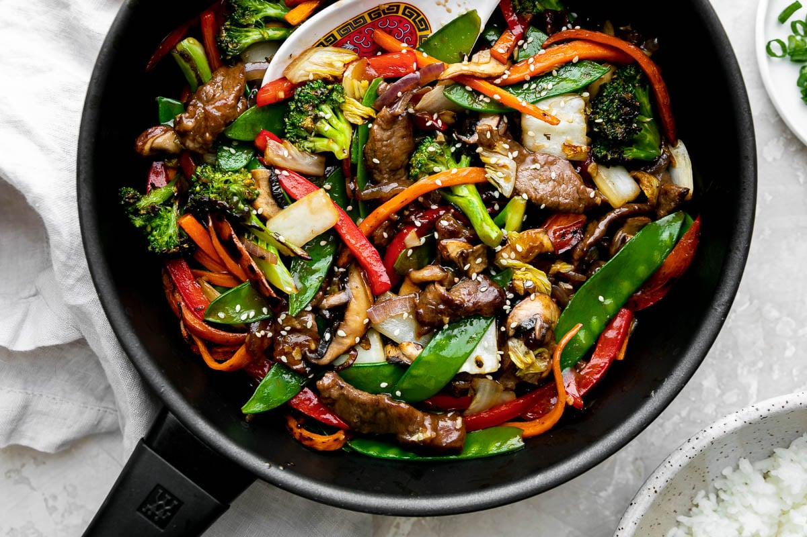

Vegetarian Stir Fry

A quick and colorful stir-fry featuring a mix of vegetables and tofu in a savory sauce.
It's a healthy and satisfying dish that's easy to prep.
Ingredients:
- 200g firm tofu, cubed
- 2 tablespoons vegetable oil
- 1 red bell pepper, sliced
- 1 yellow bell pepper, sliced
- 1 cup brocoli florets
- 1 cup snap peas
- 2 carrots, sliced
- 3 tablespoons soy sauce
- 1 tablespoon hoisin sauce
- 1 tablespoon rice vinegar
- 1 teaspoon grated ginger
- 2 cloves garlic, minced
- Cooked rice of noodles, for serving
Steps to Make:
- Heat 1 tablespoon of vegetable oil in a large skillet or wok over medium-hgh heat
Add tofu and cook until golden and crispy on all sides. Remove tofu and set aside.
- In the same skillet, add the remaining oil. Add garlic and ginger, and cook for
1 minute until fragrant.
- Add bell peppers, brocoli, snap peas, and carrots to the skillet, Stir-fry for
5-7 minutes until vegetables are tender-crisp.
- In a small bowl, mix together soy sauce, hoisin sauce, and rice vinegar.
- Return the tofu to the skillet and pour the sauce over the vegetables and tofu.
Toss to coat and cook for an additional 2 minutes.
- Serve hot over coooked rice or noodles.
Time to cook:
15-20 minutes
Substitutes:
- Tofu can be replaced with tempeh or seitan.
- Soy sauce can be substituted with tamari for a gluten-free option.
- vegetables can be varied based on what you have on hand, such as addding mushrooms or baby corn.